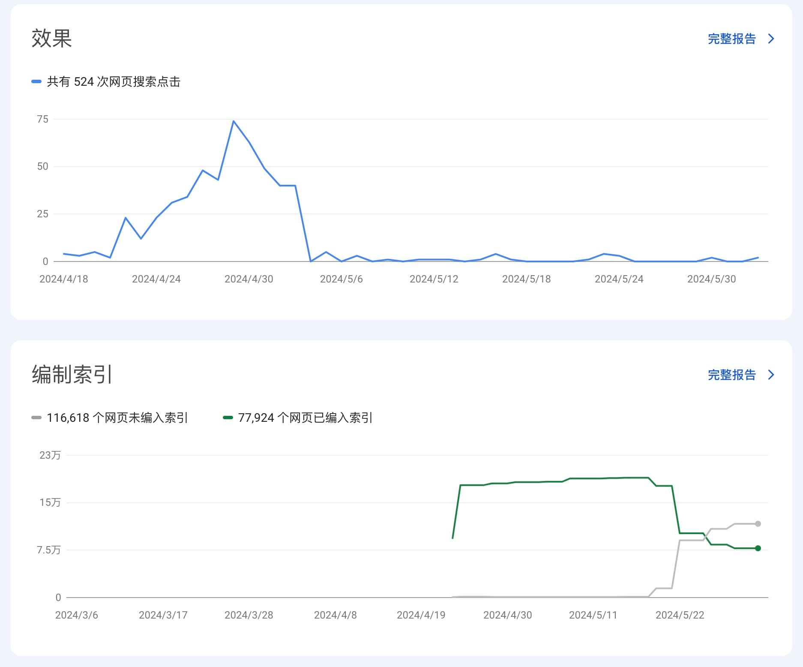
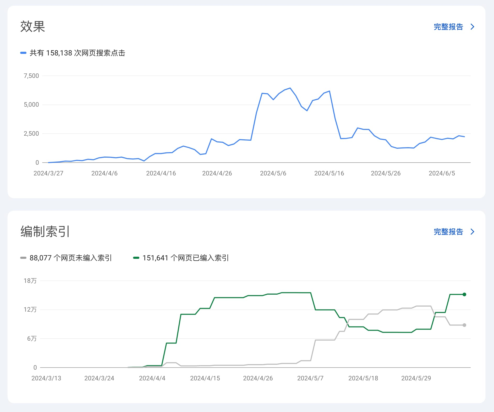
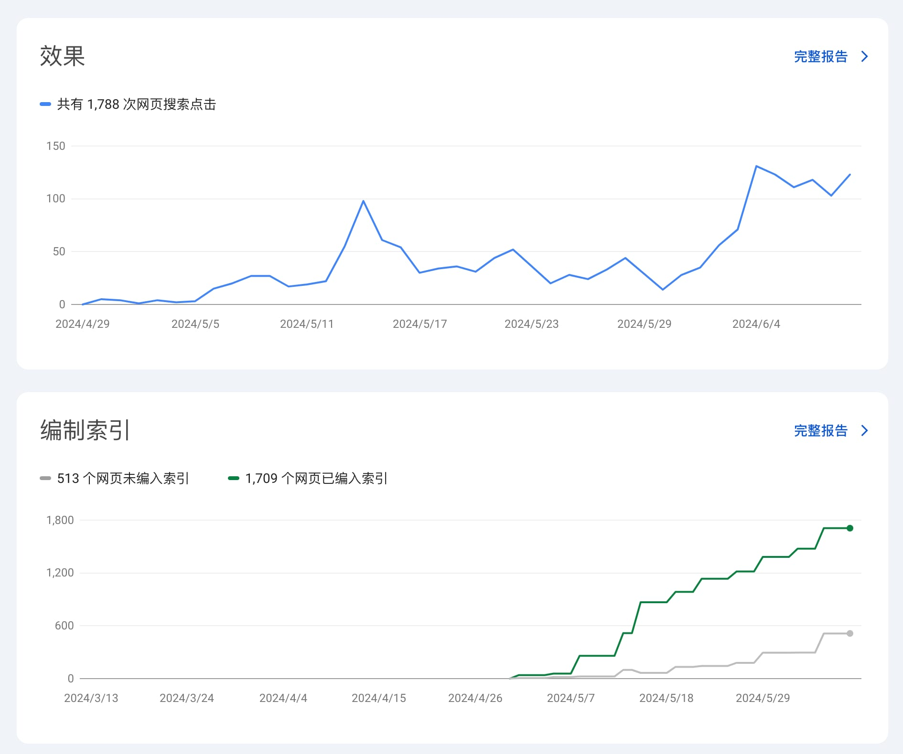

为什么你需要关注未编入索引网页数量？
日期：2024-06-11
之前跟大家聊的失败案例，最近几天又有其他朋友跟我报告类似的情况。我总结了一下，有了一个猜想，不一定对，但我觉得是有参考意义的。

几乎所有上图这种点击骤降的网站，都有图里下半部分的情况，未编入索引网页数量超过了已编入索引数量。
也就是说，大家需要每天关注自己网站的未编入索引网页数量，如果持续出现上升趋势，那么就要考虑一下，你的生成网页的策略是不是有问题了。
下面说一下我的猜想。在我看来，已抓取而未索引的网页，都是被谷歌算法检测过的，低质量页面。如果你的网站在持续生成大量的低质量网页，那么谷歌就有理由认为你的网站不是一个好网站。
有时候还会出现已索引的网页数量变少，这说明有些之前被索引的网页，经过谷歌算法的二次检测，认为是低质量网页，而清除了索引。
我觉得我们需要关注那些发布之后，但从来没有从谷歌获取到点击的网页数量，也就是0 曝光 0 点击页面。如果你的网站这种页面比较多，而且随着你生成的网页数量越来越多，这类页面的占比也越多，那么你的生成策略一定是有问题的。你生成的都是低质量垃圾页面。

这个站，目前正在自救，有可能能够救回来。
现在大家再来回顾一下，之前给大家分享的 Henry 做的页面策略，页面不需要太多，但是每上线一个都是精品，都奔着从谷歌获取对应关键词的排名和流量的目标去的。
谷歌如何定义精品页面？谷歌可能会有很多指标，但我觉得可以简化一下，我们就看页面能不能拿到对应关键词的排名和曝光。
如果你上线的每一个页面，都有排名和曝光，那么这个页面对你的主页才会有加成作用，才能够让你的网站主关键词排名越来越靠前。

最后给大家补一个例子，woy.ai 虽然目前每天点击不多，但也还在增长中。虽然页面是 AI 生成的，但也有人工参与，控制一下质量。不过最近的未索引页面比例已经有 23%了，我需要去控制一下了。